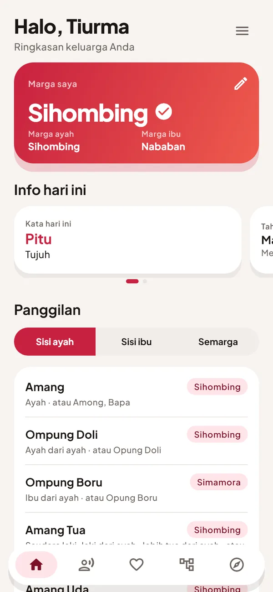
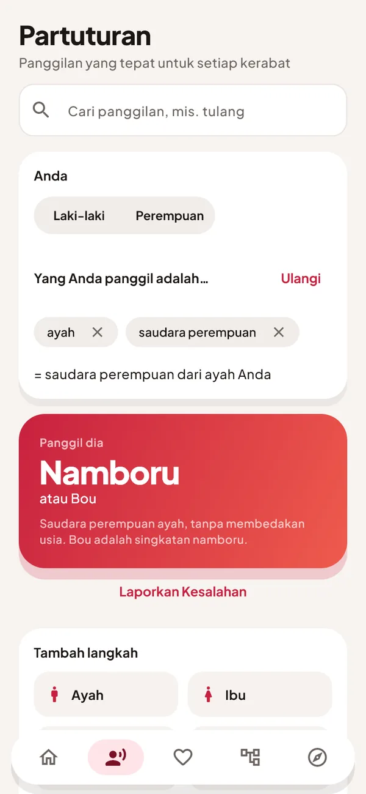
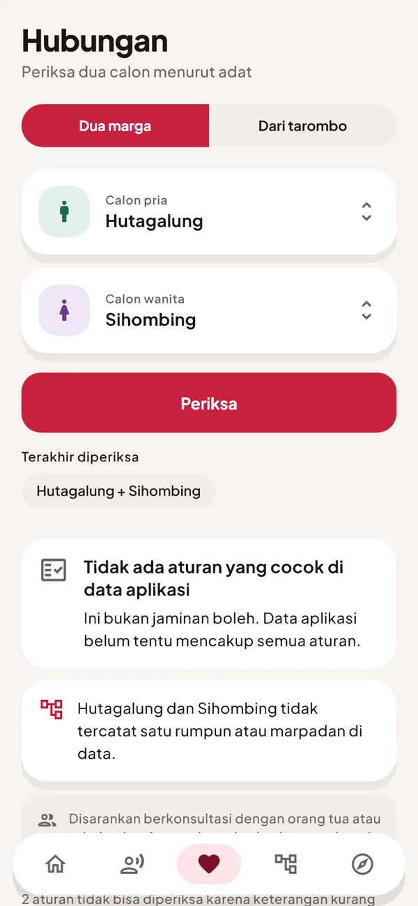
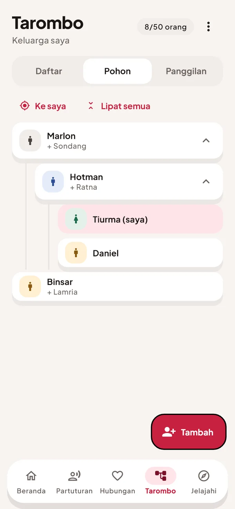
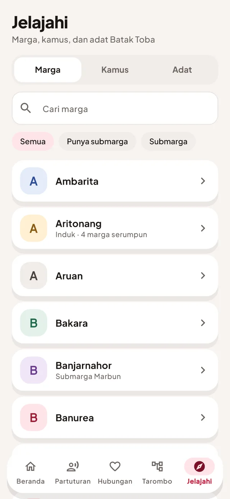

Marga, tarombo, dan partuturan dalam satu aplikasi. Bekerja tanpa internet dan tanpa akun; data keluarga Anda tetap di HP Anda.


Tangkapan layar memakai data keluarga contoh.
Bekerja tanpa internet setelah terpasang
Tidak perlu daftar atau masuk
Modul pertama; suku lain bisa Anda minta
Tidak perlu menguasai istilah adat dulu. Aplikasi menuntun Anda dari pertanyaan sederhana.
Pilih modul suku, lalu isi marga ayah dan ibu. Beranda langsung menampilkan panggilan untuk kerabat inti.
Susun hubungan langkah demi langkah dan lihat sapaan yang tepat. Periksa dua marga menurut adat, lengkap dengan alasannya.
Tambahkan anggota keluarga, lihat pohonnya, dan cadangkan ke berkas Anda sendiri.
Empat menu utama yang saling melengkapi untuk memahami kekerabatan.
Cari panggilan yang tepat untuk setiap kerabat, atau ketik nama panggilannya.
Periksa hubungan dua marga menurut adat, lengkap dengan alasannya.

Catat silsilah keluarga, lihat pohonnya, dan ekspor ke berkas Anda sendiri.

Daftar marga, kamus, serta adat dan budaya, mulai dari Batak Toba.

Pengingat ulang tahun keluarga dan ucapan sesuai suku.
Simpan tarombo ke berkas Anda sendiri dan pulihkan kapan pun.
Pilih tema dan ukuran huruf yang nyaman di mata.
Sekampung dibuat berbasis modul. Modul pertama adalah Batak Toba, dan suku lain dapat ditambahkan. Beri tahu suku yang Anda inginkan, atau bantu memeriksa isinya.
Dikembangkan oleh
Dibuat oleh seorang penutur Batak. Masukan dari penutur dan tokoh adat sangat berarti.